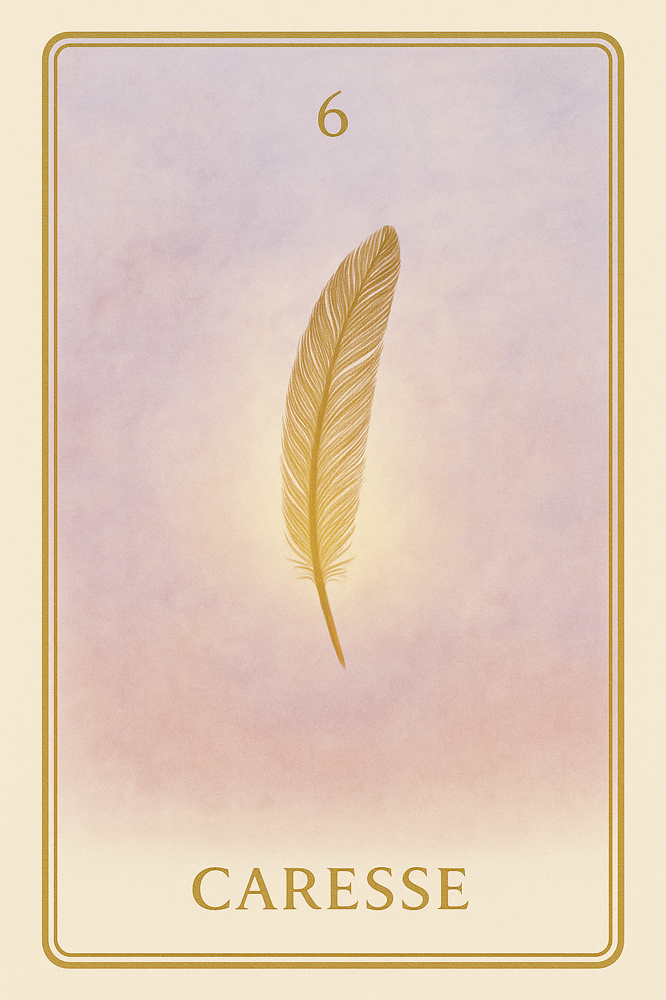
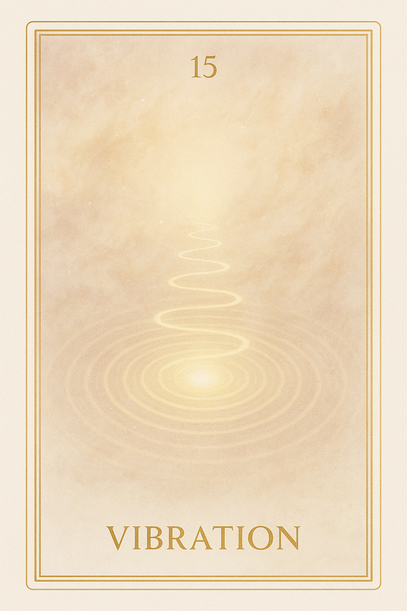
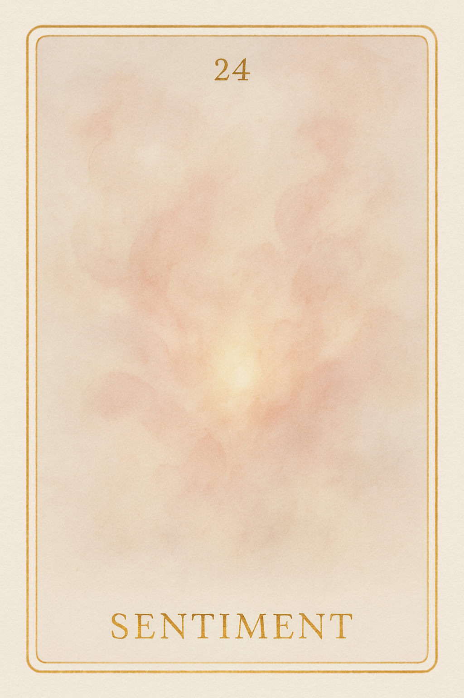
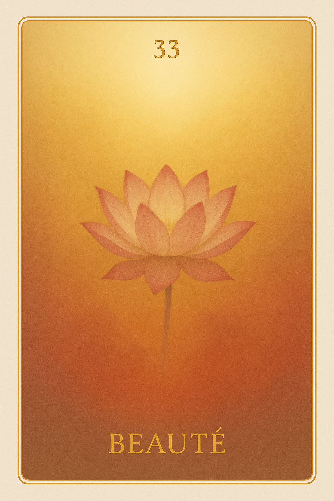
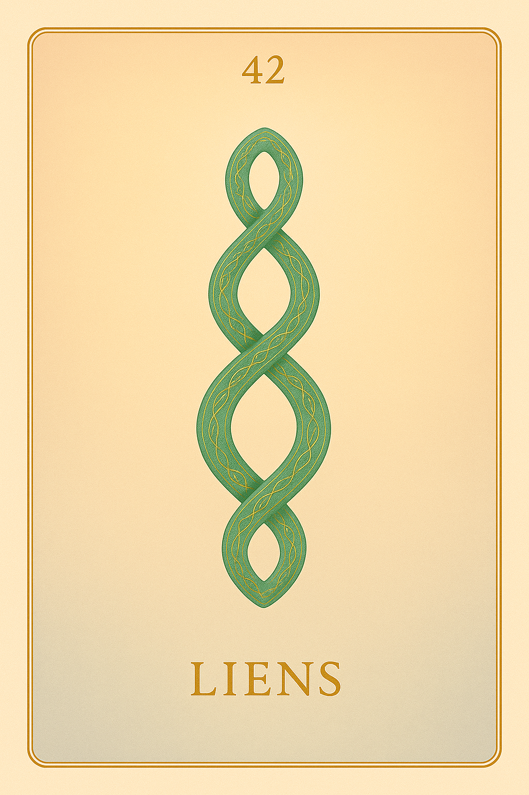
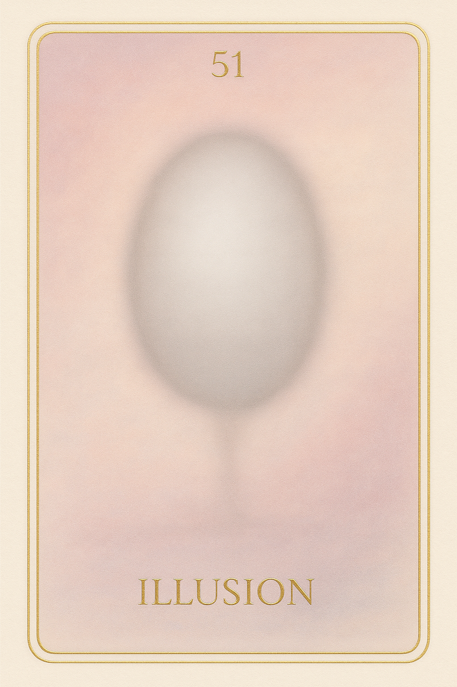
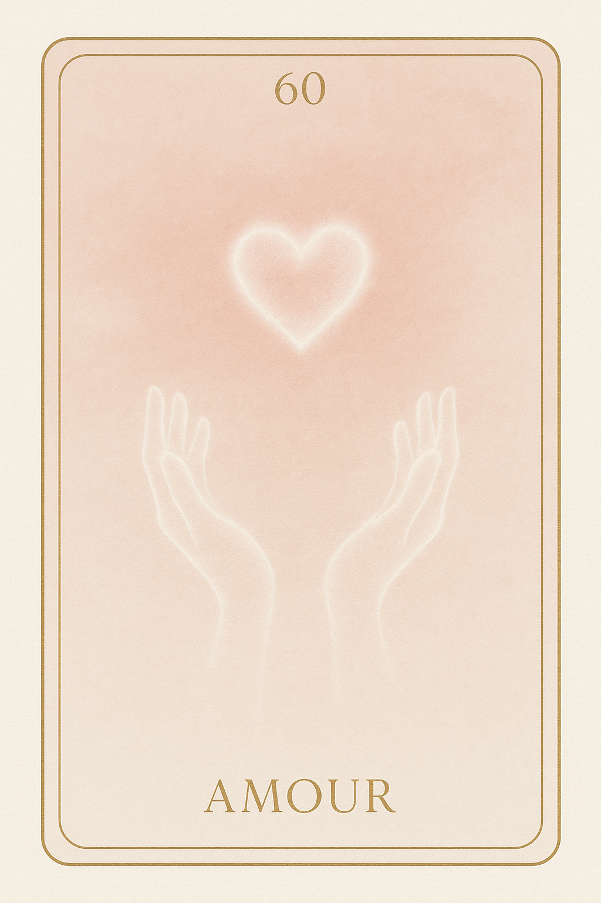
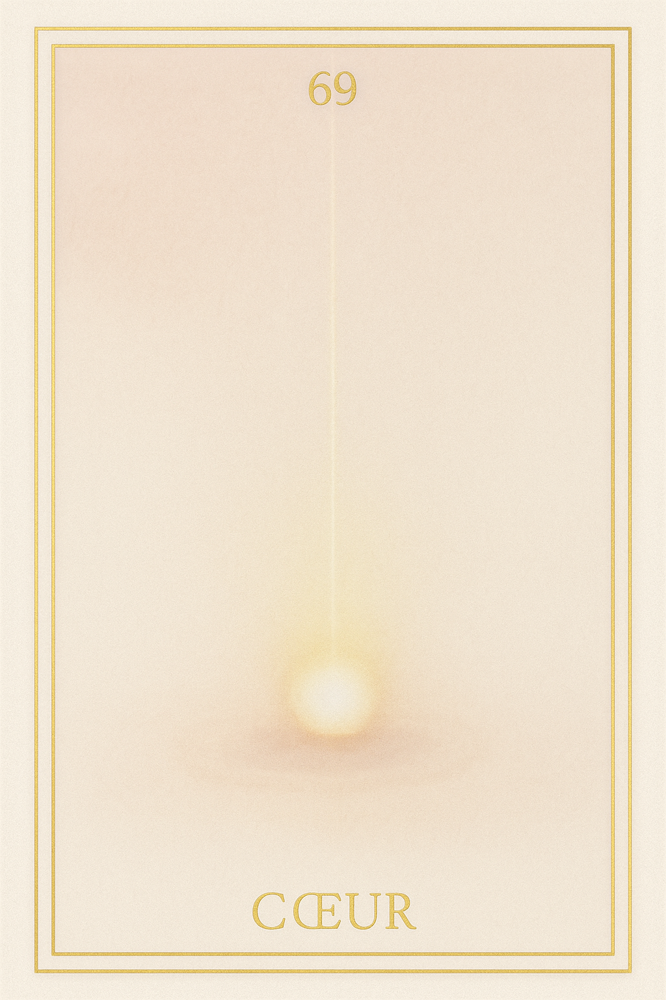
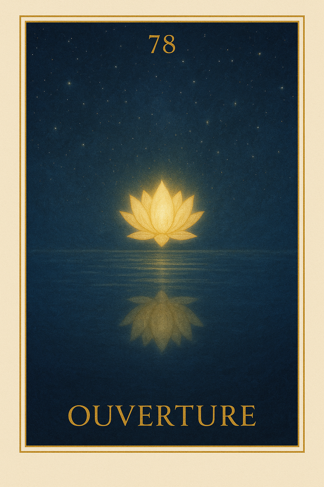

Famille 6 – Hathor (Vénus)
La sixième famille de l’oracle Sia explore l’espace du lien, entre douceur et vérité. Vénus veille sur l’émotion, Hathor sur l’amour vibrant — sans dépendance, sans fuite. Ce cycle invite à reconnaître ce qui lie, ce qui embellit, et ce qui peut guérir.
Carte 6 – Caresse
Mots-clés : amour universel, lien d’âme, douceur intérieure, mémoire affective, vibration du cœur
Chiffre caché : 96
Lecture inversée : 9 → 6
Divinité principale : Hathor
Planète secondaire : Soleil
Divinité secondaire : Râ
Interprétation de la carte 6 : Caresse (droite)
Lecture intuitive rapide
L’âme entre dans la vibration de l’amour universel. Elle ne se souvient pas encore de qui elle a aimé, ni même si elle a été aimée, mais elle ressent un frémissement doux, comme une trace lumineuse du cœur. Ce n’est pas une émotion, ni un souvenir précis, mais un contact intérieur, comme une main de lumière sur sa mémoire affective.
1. Caractère de la personne
L’âme ressent une douceur non identifiée, comme si quelque chose en elle lui rappelait qu’elle a connu l’amour. C’est un frisson intérieur, sans forme, mais profondément apaisant.
2. Plan affectif
L’âme perçoit une trace d’attachement positif, une présence invisible, qui la touche sans l’enlacer. C’est une mémoire d’amour, encore sans nom ni visage.
5. Plan spirituel
Spirituellement, Caresse est le souvenir du lien sacré : l’amour sans objet, la vibration affective primordiale que Hathor préserve au-delà du temps.
Carte 6 : Caresse (inversée)
1. Caractère de la personne
L’âme est insensible à cette douceur, ou ne la reconnaît pas. Elle croit que l’amour lui est étranger, ou qu’il ne lui appartient plus.
2. Plan affectif
Un vide se fait sentir. L’âme peut croire qu’elle a été abandonnée, alors qu’en réalité, elle ne parvient pas encore à ressentir.
5. Plan spirituel
L’âme rejette la possibilité d’un amour universel, confondant amour sacré et attachement personnel. Elle refuse l’ouverture que Hathor tente d’offrir.
Résumé de la carte 6 : Union
CARESSE est le premier toucher affectif de l’après-vie. Une sensation douce, un frisson de beauté, un souvenir d’amour sans objet précis.
À l’endroit, l’âme s’ouvre doucement au lien d’amour pur.
À l’envers, elle refuse ou nie cette vibration, croyant qu’elle lui manque.
Carte 15 – Vibration
Mots-clés : : lien affectif, mémoire d’amour, vibration émotionnelle, présence subtile, onde du cœur
Chiffre caché : 87
Lecture inversée : 7 → 8
Divinité principale : Hathor
Planète secondaire : Terre
Divinité secondaire : Geb
Interprétation de la carte 15 : Vibration (droite)
Lecture intuitive rapide
L’âme ressent une onde subtile mais insistante, comme un appel affectif venu de l’incarnation. Elle n’identifie pas encore l’émotion, mais elle vibre, au contact d’un lien ancien, d’un attachement, d’une présence. C’est une mémoire sensorielle, incarnée, non pas mentale, mais vibratoire, chargée de souvenirs affectifs ou de désirs non résolus. Une fréquence s’active, sans qu’elle sache encore d’où elle vient.
1. Caractère de la personne
L’âme sent l’écho d’un lien vécu. Une vibration douce s’élève en elle, comme la mémoire d’un attachement paisible.
2. Plan affectif
Un amour, un contact ou une présence aimée se manifeste subtilement. L’âme est traversée par cette onde affective, sans douleur.
5. Plan spirituel
L’âme entre dans la fréquence sacrée d’un lien d’âme. Ce n’est pas un souvenir, mais une signature vibratoire qui remonte doucement.
Carte 15 : Vibration (inversée)
1. Caractère de la personne
Un attachement non libéré la maintient. L’âme confond l’amour et la possession, ou se laisse hanter par un lien inachevé.
2. Plan affectif
La vibration devient envahissante. L’âme ne sait plus si elle ressent l’autre, ou si elle s’y accroche.
5. Plan spirituel
L’onde du lien se transforme en ancrage. L’âme ne se détache pas, et peut chercher à rester proche d’un vivant.
Résumé de la carte 15 : Vibration
VIBRATION est le moment où l’âme ressent l’onde d’un lien affectif incarné. Elle ne l’analyse pas encore, mais elle vibre au souvenir d’un amour, d’un contact, d’une présence.
À l’endroit, elle reçoit cette fréquence avec douceur.
À l’envers, elle s’y accroche ou la subit.
Carte 24 – Sentiment
Mots-clés : : souvenir affectif, sentiment ancien, émotion intérieure, lien du cœur, mémoire émotionnelle
Chiffre caché : 105
Lecture inversée : 5 → 0 → 1
Divinité principale : Hathor
Planète secondaire : Jupiter
Divinité secondaire : Amon-Rê
Interprétation de la carte 24 : Sentiment (droite)
Lecture intuitive rapide
L’âme se souvient de ce qu’elle a ressenti. Pas d’un moment précis, mais d’un état intérieur récurrent, lié à l’amour, au lien, au désir d’un autre. Elle ne sait pas encore si c’était de l’amour, ou de l’attente. Elle ressent un trouble, une trace affective vivante. Quelque chose a vibré en elle, et elle porte encore cette mémoire, même floue, même déformée. Ce n’est pas un souvenir, c’est un sentiment.
1. Caractère de la personne
L’âme ressent à nouveau ce qu’elle croyait avoir oublié. Elle est touchée sans comprendre.
2. Plan affectif
Un ancien lien revient à la surface. L’âme ne sait pas s’il s’agissait d’amour, mais elle le sent encore.
5. Plan spirituel
Le sentiment persiste. Il contient une vérité que l’âme ne peut encore nommer.
Carte 24 : Sentiment (inversée)
1. Caractère de la personne
L’âme refuse de sentir. Elle veut couper ce qui l’a autrefois touchée.
2. Plan affectif
L’âme nie ce qu’elle a ressenti. Ou bien elle y reste enfermée, incapable d’en sortir.
5. Plan spirituel
L’âme confond sentiment et mémoire. Elle ne voit pas encore la source du lien.
Résumé de la carte 24 : Sentiment
SENTIMENT est le moment où le lien affectif se réveille en silence. L’âme ressent, mais ne comprend pas. Elle est traversée par une mémoire douce ou douloureuse.
À l’endroit, elle accepte d’être touchée.
À l’envers, elle rejette ou se perd dans ce qu’elle sent.
Carte 33 – Beauté
Mots-clés : : amour idéalisé, beauté du lien, regard intérieur, blessure affective, idéal amoureux
Chiffre caché : 114
Lecture inversée : 4 → 1 → 1
Divinité principale : Hathor
Planète secondaire : Mars
Divinité secondaire : Sekhmet
Interprétation de la carte 33 : Beauté (droite)
Lecture intuitive rapide
L’âme regarde ce qu’elle a trouvé beau. Ce qu’elle a cherché à embellir, à sublimer, à aimer. Elle revoit les visages, les gestes, les émotions portées avec tendresse, ou exigence. Elle sent ce qu’elle a offert en désir de plénitude. Et ce qu’elle a attendu en retour. Hathor montre sans filtre la vibration de ce qu’elle a appelé “beau”. Le regard est doux… ou brûlant. Car parfois, l’âme a voulu façonner l’autre à l’image de son idéal. Parfois, elle a confondu amour et projection. Ou elle a cru que la beauté devait lui revenir. Sekhmet vibre sous la surface, là où la beauté a été blessée, volée, profanée, abandonnée. Mais le regard reste intact. Ce qui a été reconnu comme beau ne disparaît jamais. Il s’agit maintenant de regarder sans déformer, aimer sans retenir, honorer sans attendre.
1. Caractère de la personne
L’âme reconnaît ce qu’elle a cherché à rendre beau. Elle voit la lumière qu’elle a portée dans ses relations.
2. Plan affectif
L’âme honore ce qu’elle a aimé — dans l’autre, en elle, dans le lien. La beauté reste intacte, même si l’amour est passé.
5. Plan spirituel
L’âme reconnaît la beauté comme vibration sacrée. Elle accepte d’avoir vu, aimé, et parfois idéalisé.
Carte 33 : Beauté (inversée)
1. Caractère de la personne
L’âme ne voit que ce qui lui a manqué. Elle se fige dans l’image de ce qui aurait dû être.
2. Plan affectif
L’âme reproche à l’autre de ne pas avoir été à la hauteur. Elle se ferme à la beauté présente, fixée sur celle qu’elle attendait.
5. Plan spirituel
La beauté devient blessure. L’âme confond le manque avec l’idéal, et perd le lien réel au sacré.
Résumé de la carte 33 : Beauté
BEAUTÉ est le moment où l’âme revoit ce qu’elle a aimé, ce qu’elle a offert, et ce qu’elle a attendu. C’est un regard sur la vibration du lien vécu.
À l’endroit, elle honore ce qu’elle a vu de beau.
À l’envers, elle reste figée dans un manque ou une idéalisation.
Carte 42 – Liens
Mots-clés : : liens affectifs, compromis amoureux, dépendance relationnelle, amour sacrificiel, formes du lien
Chiffre caché : 123
Lecture inversée : 3 → 2 → 1
Divinité principale : Hathor
Planète secondaire : Mercure
Divinité secondaire : Thot
Interprétation de la carte 42 : Liens (droite)
Lecture intuitive rapide
L’âme regarde les liens qu’elle a tissés. Pas les relations. Les formes de lien. Ce qu’elle a cru être l’amour, ce qu’elle a recherché dans la douceur, ce qu’elle a accepté au nom de l’unité. Elle pensait avoir aimé. Elle l’a fait. Mais parfois, elle s’est effacée pour que le lien tienne. Elle s’est tue. Elle a offert sans demander. Elle a modelé son être à l’image d’un idéal. Hathor ne lui en veut pas. Elle regarde cela avec tendresse. Mais Thot trace la forme du lien. Il en montre la construction, la logique, les angles discrets que l’âme n’avait jamais vus. Et maintenant, l’âme voit. Ce n’est pas un regret. C’est une clarté.
1. Caractère de la personne
L’âme observe les liens qu’elle a créés. Elle voit où elle s’est adaptée pour ne pas rompre.
2. Plan affectif
L’âme reconnaît avoir cherché l’harmonie parfois au détriment d’elle-même. Elle revient à l’amour simple.
5. Plan spirituel
L’âme perçoit la forme vibratoire des liens. Elle les regarde avec justesse, sans rejet.
Carte 42 : Liens (inversée)
1. Caractère de la personne
L’âme s’accroche encore à une image du lien. Elle croit aimer, mais elle rejoue un rôle.
2. Plan affectif
L’âme cherche l’unité au prix de son intégrité. Le lien devient masque.
5. Plan spirituel
L’âme ne voit pas la structure mentale qu’elle appelle amour. Elle confond douceur et attachement.
Résumé de la carte 42 : Liens
LIENS est le moment où l’âme observe les formes intérieures qu’elle a appelées “amour”.
À l’endroit, elle voit sans juger.
À l’envers, elle s’identifie encore à ce qu’elle croyait être l’union.
Carte 51 – Illusion
Mots-clés : : illusion amoureuse, projection affective, amour idéalisé, confusion sentimentale, voir clair en amour
Chiffre caché : 132
Lecture inversée : 2 → 3 → 1
Divinité principale : Hathor
Planète secondaire : Vénus
Divinité secondaire : Hathor
Interprétation de la carte 51 : Illusion (droite)
Lecture intuitive rapide
L’âme regarde ce qu’elle a pris pour de l’amour. Elle voit ce qu’elle a projeté sur l’autre. Ce qu’elle voulait recevoir. Ce qu’elle a idéalisé. Elle comprend que ce n’était pas faux. Mais que ce n’était pas clair. Hathor lui montre l’éclat doux du désir, et la brume légère du manque. Elle lui murmure : « Tu n’as pas menti. Mais tu n’as pas vu. » L’âme revient alors au centre. Elle défait l’image, retrouve le lien vrai, ou accepte de le laisser partir. Car l’illusion d’aimer n’est pas l’amour.
1. Caractère de la personne
L’âme reconnaît qu’elle a projeté des images sur l’autre. Elle revient à une perception claire du lien.
2. Plan affectif
L’âme voit qu’elle a aimé une image, pas toujours l’autre tel qu’il était. Elle accepte la vérité.
5. Plan spirituel
L’âme comprend que l’amour réel ne se nourrit pas d’illusion. Elle cherche maintenant la clarté vibratoire.
Carte 51 : Illusion (inversée)
1. Caractère de la personne
L’âme reste attachée à une version embellie du lien. Elle ne voit pas ce qui est.
2. Plan affectif
L’âme confond encore amour et besoin. Elle s’accroche à ce qui la rassure.
5. Plan spirituel
L’âme continue à parler d’amour depuis un voile. La vibration n’est pas alignée.
Résumé de la carte 51 : Illusion
ILLUSION est le moment où l’âme reconnaît ce qu’elle voulait croire. Elle distingue l’image du lien réel.
À l’endroit, elle revient à la clarté.
À l’envers, elle reste dans l’éblouissement.
Carte 60 – Amour
Mots-clés : : aimer vraiment, amour authentique, lien du cœur, tendresse sincère, donner sans attendre
Chiffre caché : 141
Lecture inversée : 1 → 4 → 1
Divinité principale : Terre
Planète secondaire : Saturne
Divinité secondaire : Osiris
Interprétation de la carte 60 : Amour (droite)
Lecture intuitive rapide
L’âme regarde comment elle a aimé. Elle revoit les gestes, les silences, les ouvertures, les absences. Hathor lui montre la douceur. Osiris lui montre le manque. Elle ne cherche pas à savoir si elle a été aimée, mais si elle a aimé vrai. Elle reconnaît ce qu’elle a donné, ce qu’elle a retenu, ce qu’elle a joué sans le sentir. Ce n’est pas une condamnation. C’est un retour au centre.
1. Caractère de la personne
L’âme regarde ce qu’elle a su aimer. Elle reconnaît la justesse de sa tendresse.
2. Plan affectif
L’âme sent ce qui vibrait dans ses liens. Elle revient à la vérité du cœur.
5. Plan spirituel
L’âme comprend que l’amour n’est pas une forme. Elle retrouve l’élan pur.
Carte 60 : Amour (inversée)
1. Caractère de la personne
L’âme a aimé depuis un manque. Elle croyait aimer pour se protéger.
2. Plan affectif
L’âme a tenu des liens sans les sentir. Elle reste attachée à une forme d’amour vide.
5. Plan spirituel
L’âme a confondu présence et attente. Elle cherche encore à être aimée au lieu d’aimer.
Résumé de la carte 60 : Amour
AMOUR est le moment où l’âme regarde ce qu’elle a su donner sans se perdre.
À l’endroit, elle revient au cœur vivant.
À l’envers, elle voit la forme aimante tenue sans vibration.
Carte 69 – Coeur
Mots-clés : : amour inconditionnel, don du cœur, aimer sans attente, lien affectif sincère, vibration du cœur
Chiffre caché : 150
Lecture inversée : 0 → 5 → 1
Divinité principale : Hathor
Planète secondaire : Uranus
Divinité secondaire : Maât
Interprétation de la carte 69 : Coeur (droite)
Lecture intuitive rapide
L’âme pose son cœur dans la balance. Non pas ce qu’elle a désiré, mais ce qu’elle a réellement donné. Elle regarde la manière dont elle a aimé. Les gestes, les élans, les attentes, les attachements. Elle sent ce qui était fluide, et ce qui était possessif. Ce qui venait d’un plein, et ce qui venait d’un vide. Hathor ne juge pas. Elle accueille avec tendresse la sincérité du don, même s’il fut maladroit. Uranus éclaire les structures : amour offert ou amour conditionné ? Maât veille, silencieuse. L’âme ne cherche plus à être aimée. Elle reconnaît ce qu’elle a offert de son cœur, sans fard.
1. Caractère de la personne
L’âme reconnaît ce qu’elle a offert avec sincérité. Elle voit la beauté de son cœur, même imparfait.
2. Plan affectif
L’âme a aimé sans calcul. Son amour a ouvert, guéri, apaisé.
5. Plan spirituel
L’âme a donné depuis l’essence. Le cœur était aligné avec l’âme.
Carte 69 : Coeur (inversée)
1. Caractère de la personne
L’âme voit qu’elle a donné pour être aimée. Elle mesure l’attente cachée derrière le geste.
2. Plan affectif
L’âme a lié par besoin. Ses dons ont parfois enfermé, ou exigé en retour.
5. Plan spirituel
L’âme n’a pas donné depuis la vérité du cœur. Son amour a été une stratégie.
Résumé de la carte 69 : Coeur
CŒUR est le moment où l’âme dépose dans la balance la qualité vibratoire de l’amour qu’elle a offert.
À l’endroit, le don était libre.
À l’envers, il portait une attente ou un attachement.
Carte 78 – Ouverture
Mots-clés : : ouverture du cœur, aimer sans peur, blocage affectif, lâcher prise émotionnel, circulation de l’amour
Chiffre caché : 159
Lecture inversée : 9 → 5 → 1
Divinité principale : Hathor
Planète secondaire : Planète inconnue
Divinité secondaire : Sia
Interprétation de la carte 78 : Ouverture (droite)
Lecture intuitive rapide
L’âme regarde maintenant dans combien de vies elle s’est ouverte, et dans combien elle s’est refermée. Elle voit tous les gestes d’amour, les élans donnés, les caresses reçues, les silences offerts, les mains tendues. Mais elle voit aussi les attentes, les blocages, les murs, les refus. S’ouvrir, ce n’est pas donner sans limite. C’est laisser l’amour circuler, sans peur ni contrôle. Hathor regarde si l’âme a su rester dans cette ouverture, même quand elle avait été blessée, même quand elle n’était pas sûre d’être aimée. Si l’âme a laissé l’amour passer, elle est libre. Si elle l’a retenu, conditionné, fermé, il reste des portes à ouvrir.
1. Caractère de la personne
L’âme s’est ouverte sans crainte. Elle n’a pas retenu ce qu’elle avait à donner.
2. Plan affectif
L’âme a su aimer sans condition, sans attente. Elle a laissé l’amour la traverser.
5. Plan spirituel
L’âme s’est abandonnée à la fréquence de l’amour. Rien ne fut filtré par la peur.
Carte 78 : Ouverture (inversée)
1. Caractère de la personne
L’âme s’est fermée souvent. Elle a confondu protection et fermeture.
2. Plan affectif
L’âme a donné pour être aimée. Elle s’est fermée dès qu’elle craignait de perdre.
5. Plan spirituel
L’amour a été filtré, conditionné. L’âme n’a pas laissé la douceur la transformer.
Résumé de la carte 78 : Ouverture
OUVERTURE regarde si l’âme a laissé l’amour circuler à travers elle, dans toutes ses vies.
À l’endroit, elle n’a rien retenu.
À l’envers, elle a gardé des barrières vibratoires.